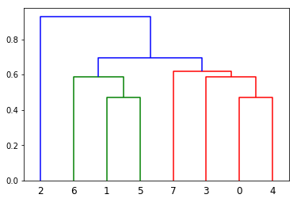

Today I am so pleased to introduce my first PyPI package (so much easier to submit comparing to CRAN) — gower for calculating gower distance. I borrowed ideas from https://github.com/scikit-learn/scikit-learn/issues/5884 nad hopefully it can be added to sklearn soon. There are lots of packages in R that incorporated this method but unfortunately not for Python users. I took this chance to try the whole package-making experience for PyPI and here we go!
What is gower distance?
Like normal Euclidean distance or cosine distance, Gower distance is a distance measure. However, it can be used to calculate distance between two entity whose attribute has a mixed of categorical and numerical values. Why this is important? Many common clustering algorithms, e.g. K-means clustering - only works when all variables are numeric. Gower (1971) A general coefficient of similarity and some of its properties. Biometrics 27 857–874.
I won’t talk about the math behind it here but if you are interested there are tons of good material out there besides of Gower’s original paper:
- https://rstudio-pubs-static.s3.amazonaws.com/423873_adfdb38bce8d47579f6dc916dd67ae75.html#fnref2
- https://towardsdatascience.com/clustering-on-mixed-type-data-8bbd0a2569c3
- https://www.math.vu.nl/~sbhulai/papers/thesis-vandenhoven.pdf
Installation
You can install directly from PyPI using pip:
pip install gower
Calculate Gower Distance
import numpy as np
import pandas as pd
Xd=pd.DataFrame({'age':[21,21,19, 30,21,21,19,30],
'gender':['M','M','M','M','F','F','F','F'],
'civil_status':['MARRIED','SINGLE','SINGLE','SINGLE','MARRIED','SINGLE','WIDOW','DIVORCED'],
'salary':[3000.0,1200.0 ,32000.0,1800.0 ,2900.0 ,1100.0 ,10000.0,1500.0],
'has_children':[1,0,1,1,1,0,0,1],
'available_credit':[2200,100,22000,1100,2000,100,6000,2200]})
Yd = Xd.iloc[0:1,:]
First create some fake data called Xd and Yd as pandas dataframe:
Xd
| age | gender | civil_status | salary | has_children | available_credit | |
|---|---|---|---|---|---|---|
| 0 | 21 | M | MARRIED | 3000.0 | 1 | 2200 |
| 1 | 21 | M | SINGLE | 1200.0 | 0 | 100 |
| 2 | 19 | M | SINGLE | 32000.0 | 1 | 22000 |
| 3 | 30 | M | SINGLE | 1800.0 | 1 | 1100 |
| 4 | 21 | F | MARRIED | 2900.0 | 1 | 2000 |
| 5 | 21 | F | SINGLE | 1100.0 | 0 | 100 |
| 6 | 19 | F | WIDOW | 10000.0 | 0 | 6000 |
| 7 | 30 | F | DIVORCED | 1500.0 | 1 | 2200 |
Yd
| age | gender | civil_status | salary | has_children | available_credit | |
|---|---|---|---|---|---|---|
| 0 | 21 | M | MARRIED | 3000.0 | 1 | 2200 |
Compute distance matrix
Main function for the package is gower.gower_matrix(). This function has 4 arguments:
data_x: input datadata_y: defaultNoneweight: weight of each variable, default to be a vector of 1cat_features: a boolean vector indicates categorical features, defaultNoneand function will determine by itself
Let’s run it on our dataframe Xd
import gower
gower.gower_matrix(Xd)
array([[0. , 0.3590238 , 0.5040732 , 0.31787416, 0.16872811,
0.52622986, 0.59697855, 0.47778758],
[0.3590238 , 0. , 0.52976364, 0.3138769 , 0.523629 ,
0.16720603, 0.45600235, 0.6539635 ],
[0.5040732 , 0.52976364, 0. , 0.48861402, 0.6728013 ,
0.6969697 , 0.740428 , 0.8151941 ],
[0.31787416, 0.3138769 , 0.48861402, 0. , 0.4824794 ,
0.48108295, 0.74818605, 0.34332284],
[0.16872811, 0.523629 , 0.6728013 , 0.4824794 , 0. ,
0.35750175, 0.43237334, 0.3121036 ],
[0.52622986, 0.16720603, 0.6969697 , 0.48108295, 0.35750175,
0. , 0.2898751 , 0.4878362 ],
[0.59697855, 0.45600235, 0.740428 , 0.74818605, 0.43237334,
0.2898751 , 0. , 0.57476616],
[0.47778758, 0.6539635 , 0.8151941 , 0.34332284, 0.3121036 ,
0.4878362 , 0.57476616, 0. ]], dtype=float32)
Let’s try to treat them all as categorical features:
gower.gower_matrix(Xd, cat_features = [True, True,True,True,True,True])
array([[0. , 0.6666667 , 0.6666667 , 0.6666667 , 0.5 ,
0.8333333 , 1. , 0.6666667 ],
[0.6666667 , 0. , 0.6666667 , 0.6666667 , 0.8333333 ,
0.33333334, 0.8333333 , 1. ],
[0.6666667 , 0.6666667 , 0. , 0.5 , 0.8333333 ,
0.8333333 , 0.8333333 , 0.8333333 ],
[0.6666667 , 0.6666667 , 0.5 , 0. , 0.8333333 ,
0.8333333 , 1. , 0.6666667 ],
[0.5 , 0.8333333 , 0.8333333 , 0.8333333 , 0. ,
0.6666667 , 0.8333333 , 0.6666667 ],
[0.8333333 , 0.33333334, 0.8333333 , 0.8333333 , 0.6666667 ,
0. , 0.6666667 , 0.8333333 ],
[1. , 0.8333333 , 0.8333333 , 1. , 0.8333333 ,
0.6666667 , 0. , 0.8333333 ],
[0.6666667 , 1. , 0.8333333 , 0.6666667 , 0.6666667 ,
0.8333333 , 0.8333333 , 0. ]], dtype=float32)
It also supports array inputs:
X = np.asarray(Xd)
gower.gower_matrix(X)
array([[0. , 0.3590238 , 0.5040732 , 0.31787416, 0.16872811,
0.52622986, 0.59697855, 0.47778758],
[0.3590238 , 0. , 0.52976364, 0.3138769 , 0.523629 ,
0.16720603, 0.45600235, 0.6539635 ],
[0.5040732 , 0.52976364, 0. , 0.48861402, 0.6728013 ,
0.6969697 , 0.740428 , 0.8151941 ],
[0.31787416, 0.3138769 , 0.48861402, 0. , 0.4824794 ,
0.48108295, 0.74818605, 0.34332284],
[0.16872811, 0.523629 , 0.6728013 , 0.4824794 , 0. ,
0.35750175, 0.43237334, 0.3121036 ],
[0.52622986, 0.16720603, 0.6969697 , 0.48108295, 0.35750175,
0. , 0.2898751 , 0.4878362 ],
[0.59697855, 0.45600235, 0.740428 , 0.74818605, 0.43237334,
0.2898751 , 0. , 0.57476616],
[0.47778758, 0.6539635 , 0.8151941 , 0.34332284, 0.3121036 ,
0.4878362 , 0.57476616, 0. ]], dtype=float32)
Find top n similar items
One intuition for me to create this package is to use it at work. I usually need to find look-alike customer for my company. E.g. one customer with certain KPI and properties — location, tenure, RFM metrics etc and they are often mixed type. Gower distance can easily be calculated the distance between them and allows me to give certain variables higher/lower weight.
gower.gower_topn(Xd.iloc[0:1,:], Xd, n = 5)
{'index': array([0, 4, 3, 1, 7]),
'values': array([0. , 0.16872811, 0.31787416, 0.3590238 , 0.47778758],
dtype=float32)}
The function will return two arrays. The index of the top 5 closest records and their distance in decimals
Application in Hierarchical Clustering
The most popular use cases for mathematical distances are clustering. cluster module in scipy provided the ability to use custom distance matrix to do hierarchical clustering. Let’s run a simple clustering model on our toy data. First we need to create the linkage using our precomputed distance matrix:
import numpy as np
import matplotlib.pyplot as plt
from scipy.cluster.hierarchy import linkage, fcluster, dendrogram
dm = gower.gower_matrix(X)
Zd = linkage(dm)
/opt/conda/lib/python3.7/site-packages/ipykernel_launcher.py:6: ClusterWarning: scipy.cluster: The symmetric non-negative hollow observation matrix looks suspiciously like an uncondensed distance matrix
Say we want total of 3 clusters:
cld = fcluster(Zd, 3, criterion='maxclust')
cld
array([2, 1, 3, 2, 2, 1, 1, 2], dtype=int32)
We can also inspect the dendrogram created from our distance matrix:
dendrogram(Zd)

This package will be maintained so please feel free to report bug and issues here: (https://github.com/wwwjk366/teamr/issues).
Last but not least:

)